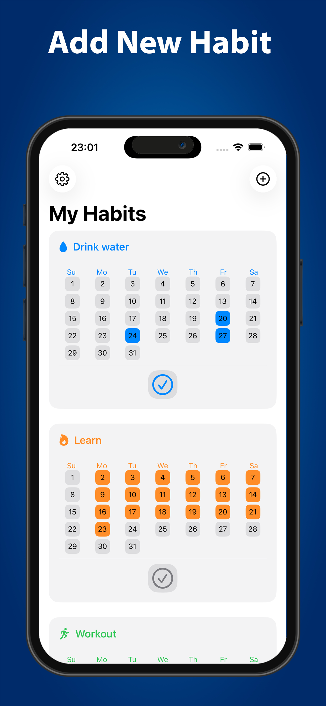
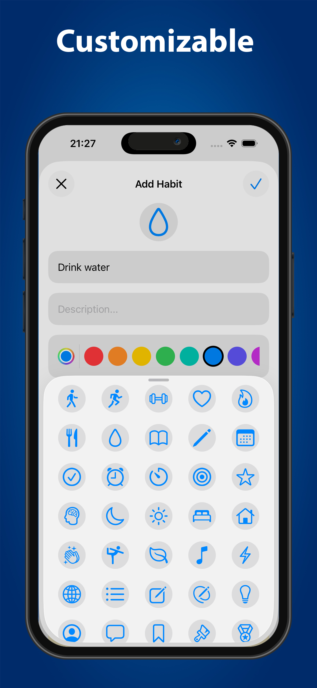
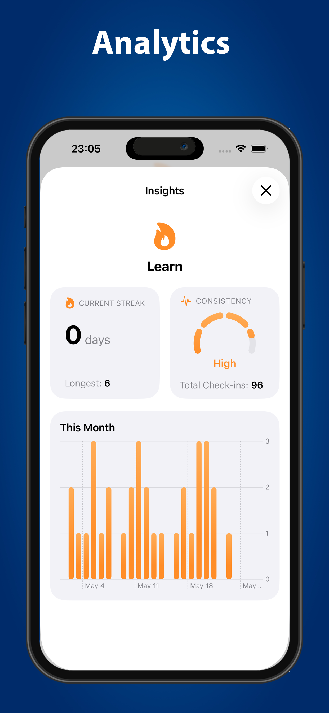
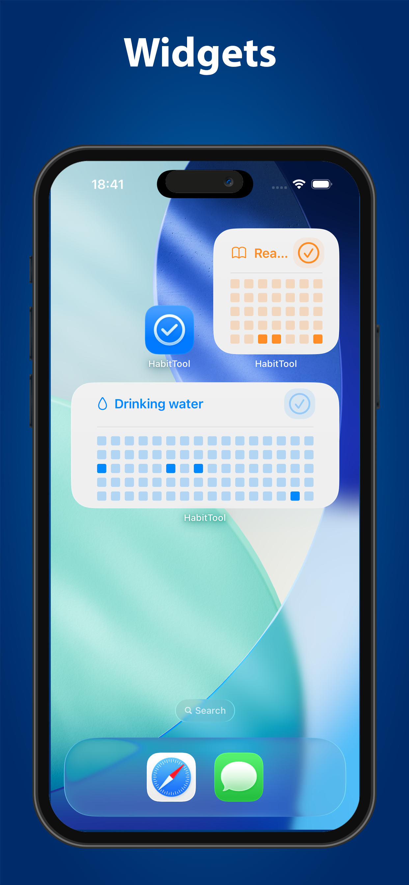

HabitTool
A clean and intuitive habit tracker designed to help users build consistency and achieve long-term goals through simple daily routines.
Overview
HabitTool helps users develop positive habits by providing a straightforward way to track daily progress and maintain consistency over time.
The application focuses on simplicity, allowing users to spend less time managing habits and more time building them.
Why I Built It
I wanted to create a lightweight habit tracker that removes unnecessary complexity. Instead of overwhelming users with statistics and social features, HabitTool focuses on one goal: helping users stay consistent every day.
Features
- Create and manage daily habits
- Track progress over time
- Simple and distraction-free interface
- Local data storage
- Privacy-first design
- Widgets for quick access
Gallery




Technical Details
Privacy
HabitTool does not collect, store, or transmit personal data. All habit information is stored locally on the user's device. The application contains no analytics, advertisements, or third-party tracking services.